churrasquin · marca v4
Um símbolo, quatro jeitos de assinar
Ícone atual aprovado (v3) e quatro estilos de logo construídos sobre a mesma churrasqueira com bife. Escolha um.
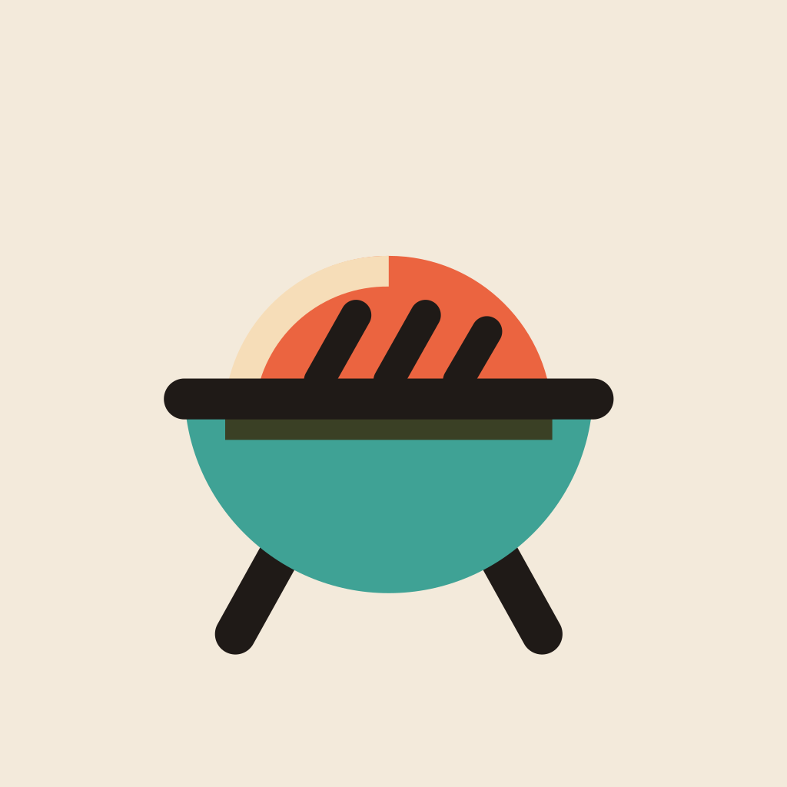
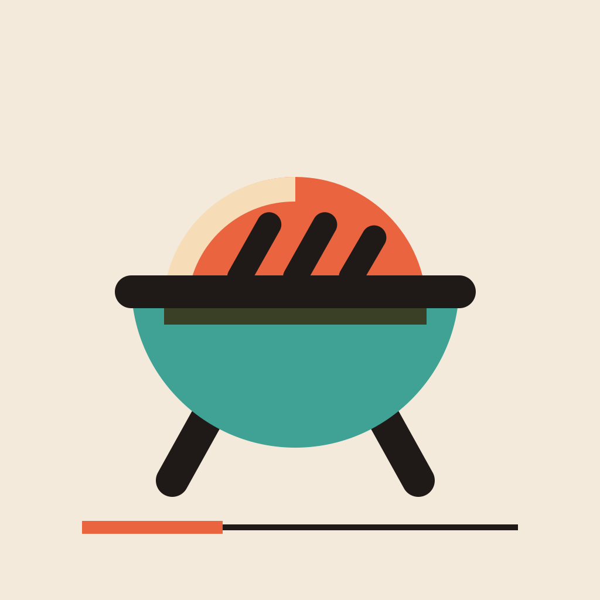
Estilo 1 · revisão
Ofício · revisão
Três letterings de DNA ocidental (açougue, feira, balcão) que guardam o corte de faca só como detalhe.
A · Grotesca de feira
Condensada robusta de cartaz de açougue; a faca só passa no pingo do i, em brasa, e no terminal do c.
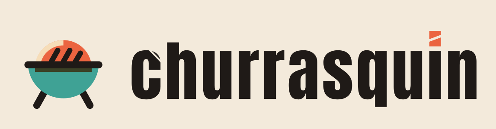
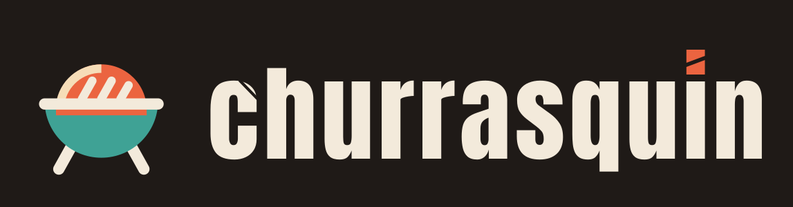
B · Egípcia de balcão
Slab de serifas retas como placa de balcão antigo; um corte limpo na serifa do h e régua vermelhão por baixo.
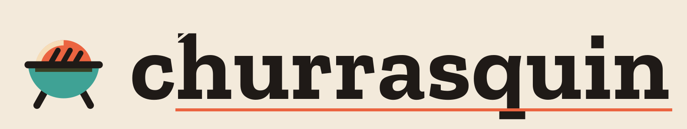
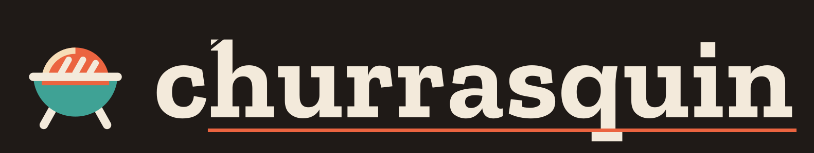
C · Humanista fatiada
Sans humanista pesada com um único golpe diagonal atravessando a palavra, a metade de cima deslizada como carne fatiada.
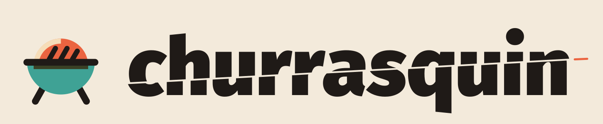
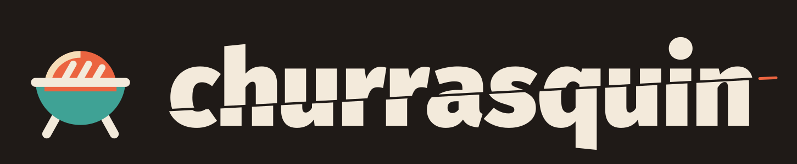
Estilo 1
Ofício
O lettering estreito de corte de faca da v3, agora com régua de açougueiro sublinhando: preciso, adulto, de quem sabe o ponto.
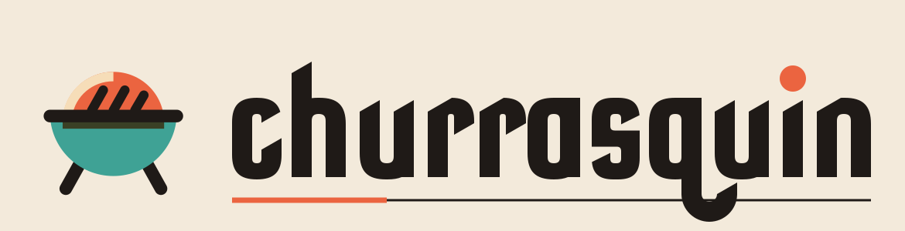
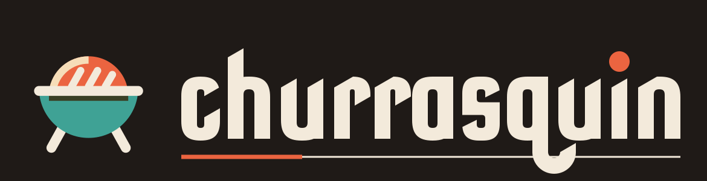
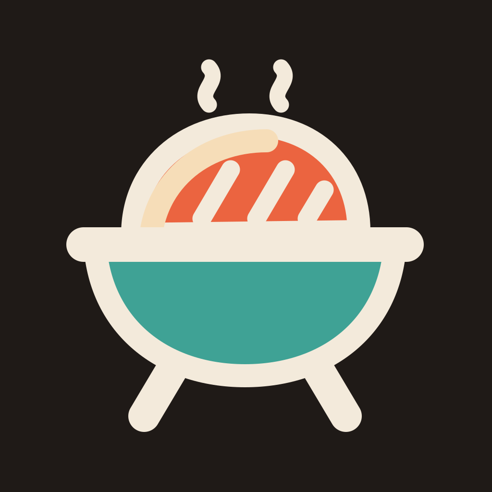
Estilo 2
Boteco
Script gordo vermelhão com sombra de letreiro pintado à mão e churrasqueira soltando fumaça: o calor do domingo na laje.
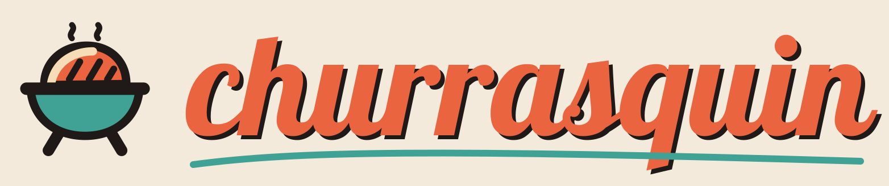
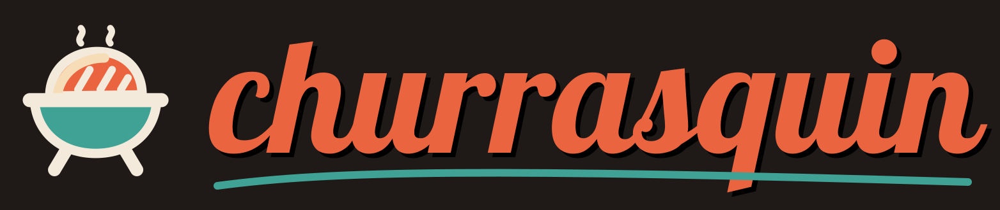
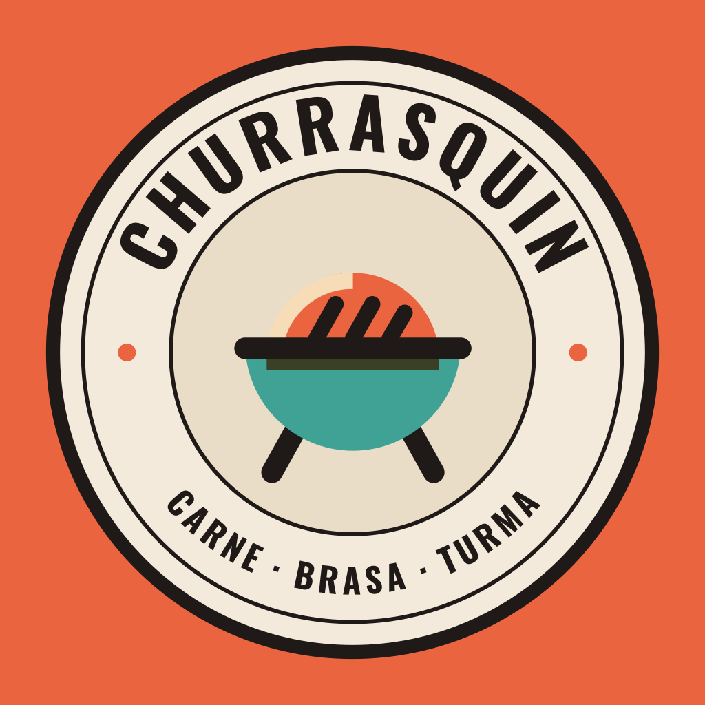
Estilo 3
Selo de açougue
Emblema circular com o nome em arco e a churrasqueira no centro: carimbo de procedência, funciona em embalagem, avental e ícone.
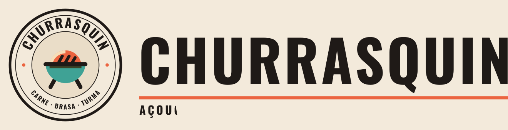
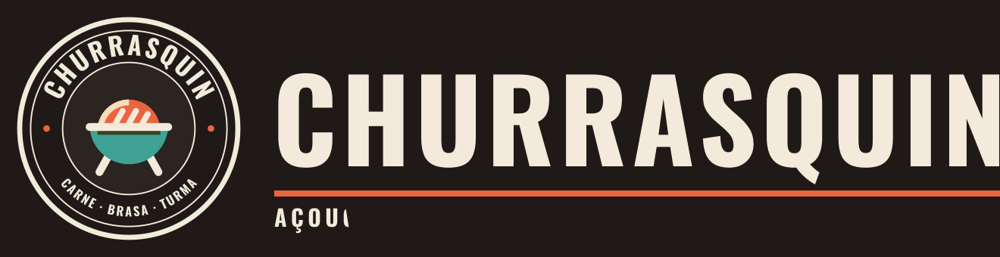
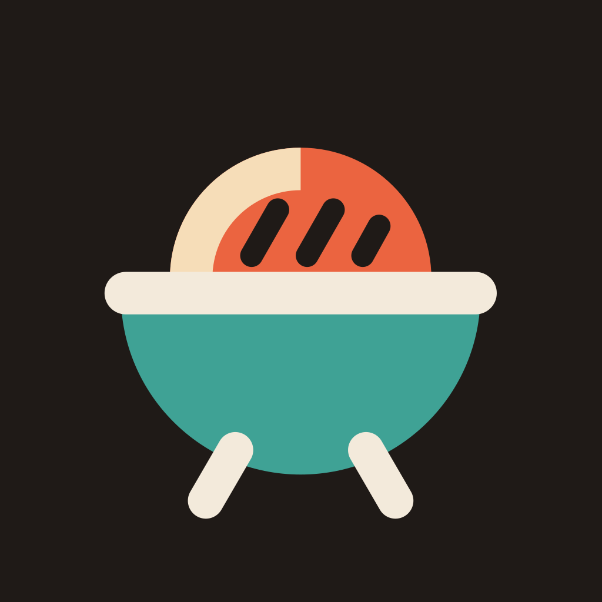
Estilo 4
Geométrico
Sans redonda e símbolo feito só de círculos e semicírculos, pingo do i em brasa: o mais limpo e “app” dos quatro.
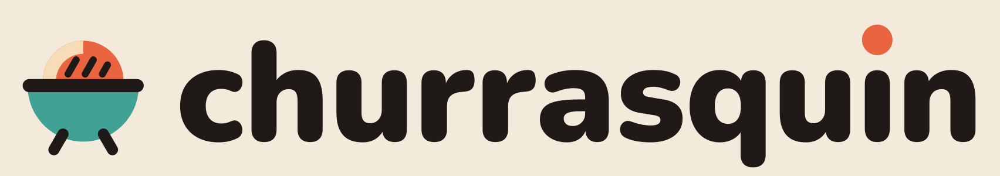
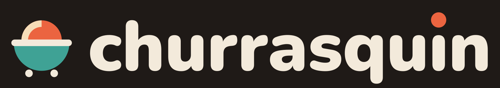
Arquivos: logo-N.svg, logo-N-neg.svg, app-icon-N.svg. Textos convertidos em contornos (Lobster, Oswald, Nunito, OFL; estilo 1 reaproveita o lettering v3).